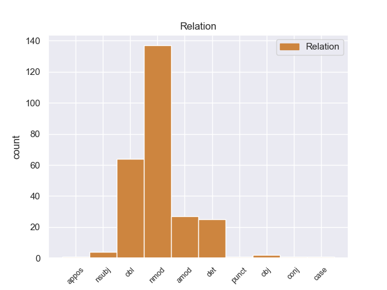
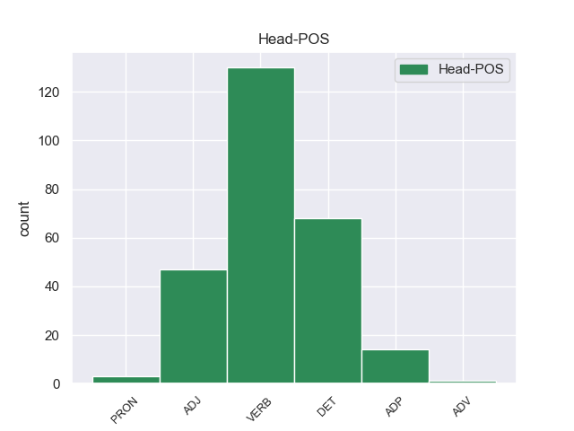
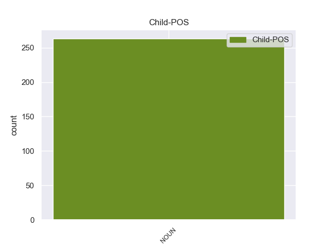

Distribution of features within this leaf



Agreement Rules sorted by frequency.
- When the dependent token is the oblique nominal(obl) of the head token, and the head token is VERB and the dependent token is NOUN.
1 Τα _ _ _ _ 0 _ _ _
2 εγκλήματα εγκλήματα NOUN _ Case=Acc|Gender=Fem|Number=Sing 15 obl _ _
3 είναι _ _ _ _ 0 _ _ _
4 σοβαρά _ _ _ _ 0 _ _ _
5 και _ _ _ _ 0 _ _ _
6 ανήκουν _ _ _ _ 0 _ _ _
7 σε _ _ _ _ 0 _ _ _
8 μια _ _ _ _ 0 _ _ _
9 κατηγορία _ _ _ _ 0 _ _ _
10 για _ _ _ _ 0 _ _ _
11 την _ _ _ _ 0 _ _ _
12 οποία _ _ _ _ 0 _ _ _
13 κανονικά _ _ _ _ 0 _ _ _
14 δεν _ _ _ _ 0 _ _ _
15 προσφέρεται προσφέρεται VERB _ Case=Acc|Gender=Fem|Number=Sing 0 _ _ _
16 βουλευτική _ _ _ _ 0 _ _ _
17 ασυλία _ _ _ _ 0 _ _ _
18 , _ _ _ _ 0 _ _ _
19 επειδή _ _ _ _ 0 _ _ _
20 δεν _ _ _ _ 0 _ _ _
21 αφορούν _ _ _ _ 0 _ _ _
22 τις _ _ _ _ 0 _ _ _
23 συνήθεις _ _ _ _ 0 _ _ _
24 και _ _ _ _ 0 _ _ _
25 προσήκουσες _ _ _ _ 0 _ _ _
26 δραστηριότητες _ _ _ _ 0 _ _ _
27 βουλευτή _ _ _ _ 0 _ _ _
28 του _ _ _ _ 0 _ _ _
29 Σώματος _ _ _ _ 0 _ _ _
30 , _ _ _ _ 0 _ _ _
31 ή _ _ _ _ 0 _ _ _
32 πολιτικού _ _ _ _ 0 _ _ _
33 που _ _ _ _ 0 _ _ _
34 δραστηριοποιείται _ _ _ _ 0 _ _ _
35 σε _ _ _ _ 0 _ _ _
36 μια _ _ _ _ 0 _ _ _
37 δημοκρατική _ _ _ _ 0 _ _ _
38 κοινωνία _ _ _ _ 0 _ _ _
39 . _ _ _ _ 0 _ _ _
1 Σ _ _ _ _ 0 _ _ _
2 την _ _ _ _ 0 _ _ _
3 παρούσα _ _ _ _ 0 _ _ _
4 μορφή _ _ _ _ 0 _ _ _
5 της _ _ _ _ 0 _ _ _
6 , _ _ _ _ 0 _ _ _
7 η _ _ _ _ 0 _ _ _
8 αίτηση ο VERB _ Case=Acc|Gender=Fem|Number=Sing 0 _ _ _
9 άρσης _ _ _ _ 0 _ _ _
10 της _ _ _ _ 0 _ _ _
11 ασυλίας ασυλίας NOUN _ Case=Gen|Gender=Fem|Number=Sing 8 nmod _ _
12 παρουσιάζεται _ _ _ _ 0 _ _ _
13 απαράδεκτα _ _ _ _ 0 _ _ _
14 ασαφής _ _ _ _ 0 _ _ _
15 . _ _ _ _ 0 _ _ _
1 Οι _ _ _ _ 0 _ _ _
2 Αρχές _ _ _ _ 0 _ _ _
3 της _ _ _ _ 0 _ _ _
4 Μισουράτας _ _ _ _ 0 _ _ _
5 ( _ _ _ _ 0 _ _ _
6 ή _ _ _ _ 0 _ _ _
7 Μισράτας μισράτας NOUN _ Case=Gen|Gender=Fem|Number=Sing 20 nmod _ _
8 ) _ _ _ _ 0 _ _ _
9 , _ _ _ _ 0 _ _ _
10 της _ _ _ _ 0 _ _ _
11 τρίτης _ _ _ _ 0 _ _ _
12 μεγαλύτερης _ _ _ _ 0 _ _ _
13 πόλης _ _ _ _ 0 _ _ _
14 σ _ _ _ _ 0 _ _ _
15 τη _ _ _ _ 0 _ _ _
16 Λιβύη _ _ _ _ 0 _ _ _
17 , _ _ _ _ 0 _ _ _
18 εξέφρασαν _ _ _ _ 0 _ _ _
19 την _ _ _ _ 0 _ _ _
20 επιθυμία επιθυμία DET _ Case=Acc|Gender=Fem|Number=Sing 0 _ _ _
21 τους _ _ _ _ 0 _ _ _
22 για _ _ _ _ 0 _ _ _
23 καθεστώς _ _ _ _ 0 _ _ _
24 ημιαυτονομίας _ _ _ _ 0 _ _ _
25 . _ _ _ _ 0 _ _ _
1 Ο _ _ _ _ 0 _ _ _
2 Πρόεδρος _ _ _ _ 0 _ _ _
3 της _ _ _ _ 0 _ _ _
4 Ευρωπαϊκής _ _ _ _ 0 _ _ _
5 Επιτροπής _ _ _ _ 0 _ _ _
6 , _ _ _ _ 0 _ _ _
7 Μανουέλ μανουέλ NOUN _ Case=Gen|Gender=Fem|Number=Sing 12 nmod _ _
8 Μπαρόζο _ _ _ _ 0 _ _ _
9 , _ _ _ _ 0 _ _ _
10 και _ _ _ _ 0 _ _ _
11 ο _ _ _ _ 0 _ _ _
12 Επικεφαλής επικεφαλής ADJ _ Case=Gen|Gender=Fem|Number=Sing 0 _ _ _
13 των _ _ _ _ 0 _ _ _
14 Φιλελεύθερων _ _ _ _ 0 _ _ _
15 του _ _ _ _ 0 _ _ _
16 Ευρωκοινοβουλίου _ _ _ _ 0 _ _ _
17 και _ _ _ _ 0 _ _ _
18 πρώην _ _ _ _ 0 _ _ _
19 Πρωθυπουργός _ _ _ _ 0 _ _ _
20 του _ _ _ _ 0 _ _ _
21 Βελγίου _ _ _ _ 0 _ _ _
22 , _ _ _ _ 0 _ _ _
23 Γκι _ _ _ _ 0 _ _ _
24 Φέρχοφστατ _ _ _ _ 0 _ _ _
25 , _ _ _ _ 0 _ _ _
26 εξέφρασαν _ _ _ _ 0 _ _ _
27 τα _ _ _ _ 0 _ _ _
28 συλληπήτηρια _ _ _ _ 0 _ _ _
29 τους _ _ _ _ 0 _ _ _
30 σ _ _ _ _ 0 _ _ _
31 τις _ _ _ _ 0 _ _ _
32 οικογένειες _ _ _ _ 0 _ _ _
33 των _ _ _ _ 0 _ _ _
34 θυμάτων _ _ _ _ 0 _ _ _
35 . _ _ _ _ 0 _ _ _
1 Οι _ _ _ _ 0 _ _ _
2 Αρχές αρχές DET _ Case=Gen|Gender=Fem|Number=Sing 0 _ _ _
3 της _ _ _ _ 0 _ _ _
4 Μισουράτας _ _ _ _ 0 _ _ _
5 ( _ _ _ _ 0 _ _ _
6 ή ή NOUN _ Case=Gen|Definite=Def|Gender=Fem|Number=Sing|PronType=Art 2 det _ _
7 Μισράτας _ _ _ _ 0 _ _ _
8 ) _ _ _ _ 0 _ _ _
9 , _ _ _ _ 0 _ _ _
10 της _ _ _ _ 0 _ _ _
11 τρίτης _ _ _ _ 0 _ _ _
12 μεγαλύτερης _ _ _ _ 0 _ _ _
13 πόλης _ _ _ _ 0 _ _ _
14 σ _ _ _ _ 0 _ _ _
15 τη _ _ _ _ 0 _ _ _
16 Λιβύη _ _ _ _ 0 _ _ _
17 , _ _ _ _ 0 _ _ _
18 εξέφρασαν _ _ _ _ 0 _ _ _
19 την _ _ _ _ 0 _ _ _
20 επιθυμία _ _ _ _ 0 _ _ _
21 τους _ _ _ _ 0 _ _ _
22 για _ _ _ _ 0 _ _ _
23 καθεστώς _ _ _ _ 0 _ _ _
24 ημιαυτονομίας _ _ _ _ 0 _ _ _
25 . _ _ _ _ 0 _ _ _
1 Η _ _ _ _ 0 _ _ _
2 ανακοίνωση _ _ _ _ 0 _ _ _
3 αυτή _ _ _ _ 0 _ _ _
4 μπορεί _ _ _ _ 0 _ _ _
5 να _ _ _ _ 0 _ _ _
6 ερμηνευτεί _ _ _ _ 0 _ _ _
7 ως _ _ _ _ 0 _ _ _
8 πιθανό _ _ _ _ 0 _ _ _
9 σημάδι _ _ _ _ 0 _ _ _
10 ότι _ _ _ _ 0 _ _ _
11 μετά _ _ _ _ 0 _ _ _
12 από _ _ _ _ 0 _ _ _
13 εβδομάδες _ _ _ _ 0 _ _ _
14 απειλών _ _ _ _ 0 _ _ _
15 εναντίον _ _ _ _ 0 _ _ _
16 των _ _ _ _ 0 _ _ _
17 Ηνωμένων _ _ _ _ 0 _ _ _
18 Πολιτειών _ _ _ _ 0 _ _ _
19 και _ _ _ _ 0 _ _ _
20 της _ _ _ _ 0 _ _ _
21 Νότιας _ _ _ _ 0 _ _ _
22 Κορέας κορέας NOUN _ Case=Gen|Gender=Fem|Number=Sing 29 amod _ _
23 , _ _ _ _ 0 _ _ _
24 η _ _ _ _ 0 _ _ _
25 Πιονγκγιάνγκ _ _ _ _ 0 _ _ _
26 τελικά _ _ _ _ 0 _ _ _
27 εξετάζει _ _ _ _ 0 _ _ _
28 την _ _ _ _ 0 _ _ _
29 πιθανότητα πιθανότητα DET _ Case=Acc|Gender=Fem|Number=Sing 0 _ _ _
30 διαλόγου _ _ _ _ 0 _ _ _
31 . _ _ _ _ 0 _ _ _
1 Τόσο _ _ _ _ 0 _ _ _
2 το _ _ _ _ 0 _ _ _
3 ζήτημα ζήτημα ADP _ Case=Gen|Gender=Fem|Number=Sing 0 _ _ _
4 της _ _ _ _ 0 _ _ _
5 ασυλίας ο NOUN _ Case=Gen|Gender=Fem|Number=Sing 3 nmod _ _
6 όσο _ _ _ _ 0 _ _ _
7 και _ _ _ _ 0 _ _ _
8 η _ _ _ _ 0 _ _ _
9 αίτηση _ _ _ _ 0 _ _ _
10 για _ _ _ _ 0 _ _ _
11 άρση _ _ _ _ 0 _ _ _
12 της _ _ _ _ 0 _ _ _
13 έχουν _ _ _ _ 0 _ _ _
14 σχέση _ _ _ _ 0 _ _ _
15 μόνο _ _ _ _ 0 _ _ _
16 με _ _ _ _ 0 _ _ _
17 το _ _ _ _ 0 _ _ _
18 εάν _ _ _ _ 0 _ _ _
19 το _ _ _ _ 0 _ _ _
20 Δικαστήριο _ _ _ _ 0 _ _ _
21 μπορεί _ _ _ _ 0 _ _ _
22 να _ _ _ _ 0 _ _ _
23 εκδώσει _ _ _ _ 0 _ _ _
24 δεσμευτικά _ _ _ _ 0 _ _ _
25 βουλεύματα _ _ _ _ 0 _ _ _
26 για _ _ _ _ 0 _ _ _
27 τον _ _ _ _ 0 _ _ _
28 περιορισμό _ _ _ _ 0 _ _ _
29 της _ _ _ _ 0 _ _ _
30 ελεύθερης _ _ _ _ 0 _ _ _
31 μετακίνησης _ _ _ _ 0 _ _ _
32 των _ _ _ _ 0 _ _ _
33 βουλευτών _ _ _ _ 0 _ _ _
34 του _ _ _ _ 0 _ _ _
35 Ευρωπαϊκού _ _ _ _ 0 _ _ _
36 Κοινοβουλίου _ _ _ _ 0 _ _ _
37 ή _ _ _ _ 0 _ _ _
38 την _ _ _ _ 0 _ _ _
39 ελευθερία _ _ _ _ 0 _ _ _
40 τους _ _ _ _ 0 _ _ _
41 να _ _ _ _ 0 _ _ _
42 έρχονται _ _ _ _ 0 _ _ _
43 σε _ _ _ _ 0 _ _ _
44 επικοινωνία _ _ _ _ 0 _ _ _
45 με _ _ _ _ 0 _ _ _
46 άλλα _ _ _ _ 0 _ _ _
47 πρόσωπα _ _ _ _ 0 _ _ _
48 . _ _ _ _ 0 _ _ _
1 Ο _ _ _ _ 0 _ _ _
2 προεδρικός _ _ _ _ 0 _ _ _
3 υποψήφιος _ _ _ _ 0 _ _ _
4 για _ _ _ _ 0 _ _ _
5 το _ _ _ _ 0 _ _ _
6 χρίσμα _ _ _ _ 0 _ _ _
7 του _ _ _ _ 0 _ _ _
8 Ρεπουμπλικανικού _ _ _ _ 0 _ _ _
9 Κόμματος _ _ _ _ 0 _ _ _
10 , _ _ _ _ 0 _ _ _
11 Ρίκ _ _ _ _ 0 _ _ _
12 Σαντόρουμ _ _ _ _ 0 _ _ _
13 , _ _ _ _ 0 _ _ _
14 αναδείχτηκε _ _ _ _ 0 _ _ _
15 τελικά _ _ _ _ 0 _ _ _
16 νικητής _ _ _ _ 0 _ _ _
17 των _ _ _ _ 0 _ _ _
18 προκριματικών προκριματικών ADJ _ Case=Acc|Gender=Fem|Number=Sing 0 _ _ _
19 εκλογών _ _ _ _ 0 _ _ _
20 σ _ _ _ _ 0 _ _ _
21 τις _ _ _ _ 0 _ _ _
22 συντηρητικές _ _ _ _ 0 _ _ _
23 νότιες νότιες NOUN _ Case=Gen|Gender=Fem|Number=Sing 18 amod _ _
24 πολιτείες _ _ _ _ 0 _ _ _
25 της _ _ _ _ 0 _ _ _
26 Αλαμπάμα _ _ _ _ 0 _ _ _
27 και _ _ _ _ 0 _ _ _
28 του _ _ _ _ 0 _ _ _
29 Μισισιπή _ _ _ _ 0 _ _ _
30 . _ _ _ _ 0 _ _ _
1 Δυτικά _ _ _ _ 0 _ _ _
2 από _ _ _ _ 0 _ _ _
3 τις _ _ _ _ 0 _ _ _
4 Κουκουναριές _ _ _ _ 0 _ _ _
5 βρίσκονται _ _ _ _ 0 _ _ _
6 οι _ _ _ _ 0 _ _ _
7 παραλίες παραλίες ADJ _ Case=Acc|Gender=Fem|Number=Sing 0 _ _ _
8 Μικρή μικρή NOUN _ Case=Gen|Gender=Fem|Number=Sing 7 det _ _
9 και _ _ _ _ 0 _ _ _
10 Μεγάλη _ _ _ _ 0 _ _ _
11 Μπανάνα _ _ _ _ 0 _ _ _
12 , _ _ _ _ 0 _ _ _
13 Κρασά _ _ _ _ 0 _ _ _
14 , _ _ _ _ 0 _ _ _
15 Ασέληνο _ _ _ _ 0 _ _ _
16 , _ _ _ _ 0 _ _ _
17 Αγία _ _ _ _ 0 _ _ _
18 Ελένη _ _ _ _ 0 _ _ _
19 και _ _ _ _ 0 _ _ _
20 Μανδράκι _ _ _ _ 0 _ _ _
21 . _ _ _ _ 0 _ _ _
1 Η _ _ _ _ 0 _ _ _
2 Κυβέρνηση _ _ _ _ 0 _ _ _
3 της _ _ _ _ 0 _ _ _
4 Βόρειας _ _ _ _ 0 _ _ _
5 Κορέας κορέας NOUN _ Case=Gen|Gender=Fem|Number=Sing 22 amod _ _
6 απαγορεύει _ _ _ _ 0 _ _ _
7 σ _ _ _ _ 0 _ _ _
8 την _ _ _ _ 0 _ _ _
9 πλειοψηφία _ _ _ _ 0 _ _ _
10 των _ _ _ _ 0 _ _ _
11 πολιτών _ _ _ _ 0 _ _ _
12 να _ _ _ _ 0 _ _ _
13 έχουν _ _ _ _ 0 _ _ _
14 πρόσβαση _ _ _ _ 0 _ _ _
15 σ _ _ _ _ 0 _ _ _
16 το _ _ _ _ 0 _ _ _
17 διαδίκτυο _ _ _ _ 0 _ _ _
18 , _ _ _ _ 0 _ _ _
19 για _ _ _ _ 0 _ _ _
20 να _ _ _ _ 0 _ _ _
21 τους _ _ _ _ 0 _ _ _
22 προστατέψει προστατέψει VERB _ Case=Acc|Gender=Fem|Number=Sing 0 _ _ _
23 , _ _ _ _ 0 _ _ _
24 όπως _ _ _ _ 0 _ _ _
25 αναφέρει _ _ _ _ 0 _ _ _
26 , _ _ _ _ 0 _ _ _
27 από _ _ _ _ 0 _ _ _
28 τις _ _ _ _ 0 _ _ _
29 εξωτερικές _ _ _ _ 0 _ _ _
30 επιρροές _ _ _ _ 0 _ _ _
31 . _ _ _ _ 0 _ _ _
1 Η _ _ _ _ 0 _ _ _
2 Μπενφίκα _ _ _ _ 0 _ _ _
3 ήταν _ _ _ _ 0 _ _ _
4 πιο _ _ _ _ 0 _ _ _
5 επιθετική επιθετική VERB _ Case=Gen|Gender=Fem|Number=Sing 0 _ _ _
6 και _ _ _ _ 0 _ _ _
7 καλύτερη _ _ _ _ 0 _ _ _
8 σ _ _ _ _ 0 _ _ _
9 το _ _ _ _ 0 _ _ _
10 πρώτο _ _ _ _ 0 _ _ _
11 ημίχρονο ημίχρονο NOUN _ Case=Acc|Gender=Fem|Number=Sing 5 det _ _
12 , _ _ _ _ 0 _ _ _
13 με _ _ _ _ 0 _ _ _
14 αποτέλεσμα _ _ _ _ 0 _ _ _
15 να _ _ _ _ 0 _ _ _
16 ανοίξει _ _ _ _ 0 _ _ _
17 το _ _ _ _ 0 _ _ _
18 σκορ _ _ _ _ 0 _ _ _
19 σ _ _ _ _ 0 _ _ _
20 το _ _ _ _ 0 _ _ _
21 πρώτο _ _ _ _ 0 _ _ _
22 λεπτό _ _ _ _ 0 _ _ _
23 των _ _ _ _ 0 _ _ _
24 καθυστερήσεων _ _ _ _ 0 _ _ _
25 , _ _ _ _ 0 _ _ _
26 χάρη _ _ _ _ 0 _ _ _
27 σ _ _ _ _ 0 _ _ _
28 τον _ _ _ _ 0 _ _ _
29 Μάξι _ _ _ _ 0 _ _ _
30 Περέιρα _ _ _ _ 0 _ _ _
31 . _ _ _ _ 0 _ _ _
1 Σύμφωνα _ _ _ _ 0 _ _ _
2 με _ _ _ _ 0 _ _ _
3 έρευνες ο NOUN _ Case=Gen|Gender=Fem|Number=Sing 18 nsubj _ _
4 , _ _ _ _ 0 _ _ _
5 σ _ _ _ _ 0 _ _ _
6 τη _ _ _ _ 0 _ _ _
7 Ρωσία _ _ _ _ 0 _ _ _
8 ο _ _ _ _ 0 _ _ _
9 ένας _ _ _ _ 0 _ _ _
10 σ _ _ _ _ 0 _ _ _
11 τους _ _ _ _ 0 _ _ _
12 πέντε _ _ _ _ 0 _ _ _
13 ανθρώπους _ _ _ _ 0 _ _ _
14 κάτω _ _ _ _ 0 _ _ _
15 των _ _ _ _ 0 _ _ _
16 20 _ _ _ _ 0 _ _ _
17 ετών _ _ _ _ 0 _ _ _
18 προτιμά προτιμά VERB _ Case=Acc|Gender=Fem|Number=Sing 0 _ _ _
19 να _ _ _ _ 0 _ _ _
20 βάλει _ _ _ _ 0 _ _ _
21 τέλος _ _ _ _ 0 _ _ _
22 σ _ _ _ _ 0 _ _ _
23 τη _ _ _ _ 0 _ _ _
24 ζωή _ _ _ _ 0 _ _ _
25 του _ _ _ _ 0 _ _ _
26 - _ _ _ _ 0 _ _ _
27 αριθμός _ _ _ _ 0 _ _ _
28 τριπλάσιος _ _ _ _ 0 _ _ _
29 απ' _ _ _ _ 0 _ _ _
30 αυτόν _ _ _ _ 0 _ _ _
31 που _ _ _ _ 0 _ _ _
32 παρουσιάζουν _ _ _ _ 0 _ _ _
33 οι _ _ _ _ 0 _ _ _
34 ΗΠΑ _ _ _ _ 0 _ _ _
35 . _ _ _ _ 0 _ _ _
1 Ο _ _ _ _ 0 _ _ _
2 Ρικ _ _ _ _ 0 _ _ _
3 Σαντόρουμ _ _ _ _ 0 _ _ _
4 , _ _ _ _ 0 _ _ _
5 υποψήφιος _ _ _ _ 0 _ _ _
6 για _ _ _ _ 0 _ _ _
7 το _ _ _ _ 0 _ _ _
8 προεδρικό _ _ _ _ 0 _ _ _
9 χρίσμα χρίσμα NOUN _ Case=Gen|Gender=Fem|Number=Sing 13 obj _ _
10 των _ _ _ _ 0 _ _ _
11 Ρεπουμπλικανών _ _ _ _ 0 _ _ _
12 , _ _ _ _ 0 _ _ _
13 πέτυχε πέτυχε VERB _ Case=Acc|Gender=Fem|Number=Sing 0 _ _ _
14 μεγάλη _ _ _ _ 0 _ _ _
15 νίκη _ _ _ _ 0 _ _ _
16 σ _ _ _ _ 0 _ _ _
17 την _ _ _ _ 0 _ _ _
18 πολιτεία _ _ _ _ 0 _ _ _
19 του _ _ _ _ 0 _ _ _
20 Κάνσας _ _ _ _ 0 _ _ _
21 . _ _ _ _ 0 _ _ _
1 Οι _ _ _ _ 0 _ _ _
2 ασκήσεις άσκηση NOUN NOUN Case=Nom|Gender=Fem|Number=Plur 7 nsubj _ _
3 τέτοιου _ _ _ _ 0 _ _ _
4 τύπου _ _ _ _ 0 _ _ _
5 δεν _ _ _ _ 0 _ _ _
6 είναι _ _ _ _ 0 _ _ _
7 ασυνήθιστες ασυνήθιστος ADJ ADJ Case=Nom|Gender=Fem|Number=Plur 0 _ _ _
8 , _ _ _ _ 0 _ _ _
9 αλλά _ _ _ _ 0 _ _ _
10 συνήθως _ _ _ _ 0 _ _ _
11 επιβαρύνουν _ _ _ _ 0 _ _ _
12 ακόμα _ _ _ _ 0 _ _ _
13 περισσότερο _ _ _ _ 0 _ _ _
14 τις _ _ _ _ 0 _ _ _
15 σχέσεις _ _ _ _ 0 _ _ _
16 μεταξύ _ _ _ _ 0 _ _ _
17 των _ _ _ _ 0 _ _ _
18 δύο _ _ _ _ 0 _ _ _
19 χωρών _ _ _ _ 0 _ _ _
20 , _ _ _ _ 0 _ _ _
21 οι _ _ _ _ 0 _ _ _
22 οποίες _ _ _ _ 0 _ _ _
23 εξακολουθούν _ _ _ _ 0 _ _ _
24 να _ _ _ _ 0 _ _ _
25 είναι _ _ _ _ 0 _ _ _
26 τεχνικά _ _ _ _ 0 _ _ _
27 σε _ _ _ _ 0 _ _ _
28 εμπόλεμη _ _ _ _ 0 _ _ _
29 κατάσταση _ _ _ _ 0 _ _ _
30 . _ _ _ _ 0 _ _ _
1 Αυτή αυτός PRON PRON Case=Nom|Gender=Fem|Number=Sing|Person=3|PronType=Dem 0 _ _ _
2 είναι _ _ _ _ 0 _ _ _
3 η _ _ _ _ 0 _ _ _
4 κατάσταση κατάσταση NOUN NOUN Case=Nom|Gender=Fem|Number=Sing 1 nsubj _ _
5 επί _ _ _ _ 0 _ _ _
6 της _ _ _ _ 0 _ _ _
7 οποίας _ _ _ _ 0 _ _ _
8 πρέπει _ _ _ _ 0 _ _ _
9 να _ _ _ _ 0 _ _ _
10 αποφασίσουμε _ _ _ _ 0 _ _ _
11 . _ _ _ _ 0 _ _ _
1 Αυτά _ _ _ _ 0 _ _ _
2 τα _ _ _ _ 0 _ _ _
3 ποσοστά ποσοστά ADP _ Case=Acc|Gender=Fem|Number=Sing 0 _ _ _
4 είναι _ _ _ _ 0 _ _ _
5 τα _ _ _ _ 0 _ _ _
6 πιο _ _ _ _ 0 _ _ _
7 χαμηλά _ _ _ _ 0 _ _ _
8 από _ _ _ _ 0 _ _ _
9 τότε _ _ _ _ 0 _ _ _
10 που _ _ _ _ 0 _ _ _
11 το _ _ _ _ 0 _ _ _
12 IFOP _ _ _ _ 0 _ _ _
13 ξεκίνησε _ _ _ _ 0 _ _ _
14 δημοσκοπήσεις _ _ _ _ 0 _ _ _
15 σ _ _ _ _ 0 _ _ _
16 τη _ _ _ _ 0 _ _ _
17 Γαλλία _ _ _ _ 0 _ _ _
18 μετά _ _ _ _ 0 _ _ _
19 τα _ _ _ _ 0 _ _ _
20 γεγονότα _ _ _ _ 0 _ _ _
21 της _ _ _ _ 0 _ _ _
22 11ης _ _ _ _ 0 _ _ _
23 Σεπτεμβρίου _ _ _ _ 0 _ _ _
24 2001 2001 NOUN _ Case=Gen|Gender=Fem|Number=Sing 3 punct _ _
25 . _ _ _ _ 0 _ _ _
1 Βελτιώνεται _ _ _ _ 0 _ _ _
2 η _ _ _ _ 0 _ _ _
3 κατάσταση _ _ _ _ 0 _ _ _
4 της _ _ _ _ 0 _ _ _
5 υγείας υγείας NOUN _ Case=Gen|Gender=Fem|Number=Sing 7 conj _ _
6 της _ _ _ _ 0 _ _ _
7 Χίλαρι χίλαρι DET _ Case=Gen|Gender=Fem|Number=Sing 0 _ _ _
8 Κλίντον _ _ _ _ 0 _ _ _
9 . _ _ _ _ 0 _ _ _
1 Ανακοίνωση _ _ _ _ 0 _ _ _
2 των _ _ _ _ 0 _ _ _
3 γιατρών _ _ _ _ 0 _ _ _
4 της _ _ _ _ 0 _ _ _
5 Χίλαρι _ _ _ _ 0 _ _ _
6 Κλίντον _ _ _ _ 0 _ _ _
7 αναφέρει _ _ _ _ 0 _ _ _
8 ότι _ _ _ _ 0 _ _ _
9 " _ _ _ _ 0 _ _ _
10 η _ _ _ _ 0 _ _ _
11 κατάσταση κατάσταση ADP _ Case=Acc|Gender=Fem|Number=Sing 0 _ _ _
12 της _ _ _ _ 0 _ _ _
13 υγείας υγείας NOUN _ Case=Gen|Gender=Fem|Number=Sing 11 det _ _
14 της _ _ _ _ 0 _ _ _
15 Υπουργού _ _ _ _ 0 _ _ _
16 Εξωτερικών _ _ _ _ 0 _ _ _
17 βελτιώνεται _ _ _ _ 0 _ _ _
18 και _ _ _ _ 0 _ _ _
19 εξέφρασαν _ _ _ _ 0 _ _ _
20 την _ _ _ _ 0 _ _ _
21 πεποίθηση _ _ _ _ 0 _ _ _
22 ότι _ _ _ _ 0 _ _ _
23 θα _ _ _ _ 0 _ _ _
24 ανακάμψει _ _ _ _ 0 _ _ _
25 πλήρως _ _ _ _ 0 _ _ _
26 . _ _ _ _ 0 _ _ _
1 Ο _ _ _ _ 0 _ _ _
2 Ερυθρός _ _ _ _ 0 _ _ _
3 Σταυρός _ _ _ _ 0 _ _ _
4 προειδοποιεί προειδοποιεί DET _ Case=Acc|Gender=Fem|Number=Sing 0 _ _ _
5 ότι _ _ _ _ 0 _ _ _
6 " _ _ _ _ 0 _ _ _
7 εκατομμύρια _ _ _ _ 0 _ _ _
8 άνθρωποι _ _ _ _ 0 _ _ _
9 υποφέρουν _ _ _ _ 0 _ _ _
10 από _ _ _ _ 0 _ _ _
11 μείωση _ _ _ _ 0 _ _ _
12 των _ _ _ _ 0 _ _ _
13 εισοδημάτων _ _ _ _ 0 _ _ _
14 τους _ _ _ _ 0 _ _ _
15 , _ _ _ _ 0 _ _ _
16 έλλειψη _ _ _ _ 0 _ _ _
17 τροφίμων _ _ _ _ 0 _ _ _
18 και _ _ _ _ 0 _ _ _
19 ιατροφαρμακευτικής _ _ _ _ 0 _ _ _
20 περίθαλψης περίθαλψης NOUN _ Case=Gen|Gender=Fem|Number=Sing 4 obl _ _
21 . _ _ _ _ 0 _ _ _
1 Το _ _ _ _ 0 _ _ _
2 δεύτερο _ _ _ _ 0 _ _ _
3 θέμα _ _ _ _ 0 _ _ _
4 σ _ _ _ _ 0 _ _ _
5 το _ _ _ _ 0 _ _ _
6 οποίο _ _ _ _ 0 _ _ _
7 επικεντρώθηκα _ _ _ _ 0 _ _ _
8 αφορά _ _ _ _ 0 _ _ _
9 την _ _ _ _ 0 _ _ _
10 προώθηση _ _ _ _ 0 _ _ _
11 της _ _ _ _ 0 _ _ _
12 ποδηλασίας _ _ _ _ 0 _ _ _
13 και _ _ _ _ 0 _ _ _
14 του _ _ _ _ 0 _ _ _
15 βαδίσματος _ _ _ _ 0 _ _ _
16 σ _ _ _ _ 0 _ _ _
17 την _ _ _ _ 0 _ _ _
18 πολιτική _ _ _ _ 0 _ _ _
19 μεταφορών μεταφορών NOUN _ Case=Acc|Gender=Fem|Number=Sing 25 case _ _
20 της _ _ _ _ 0 _ _ _
21 ΕΕ _ _ _ _ 0 _ _ _
22 , _ _ _ _ 0 _ _ _
23 σ _ _ _ _ 0 _ _ _
24 το _ _ _ _ 0 _ _ _
25 πλαίσιο πλαίσιο ADJ _ Case=Acc|Gender=Fem|Number=Sing 0 _ _ _
26 της _ _ _ _ 0 _ _ _
27 επικουρικότητας _ _ _ _ 0 _ _ _
28 . _ _ _ _ 0 _ _ _
1 Το _ _ _ _ 0 _ _ _
2 λατινικό _ _ _ _ 0 _ _ _
3 όνομά _ _ _ _ 0 _ _ _
4 της _ _ _ _ 0 _ _ _
5 , _ _ _ _ 0 _ _ _
6 Corfu _ _ _ _ 0 _ _ _
7 ( _ _ _ _ 0 _ _ _
8 Κορφού _ _ _ _ 0 _ _ _
9 ) _ _ _ _ 0 _ _ _
10 οφείλεται _ _ _ _ 0 _ _ _
11 σ _ _ _ _ 0 _ _ _
12 την _ _ _ _ 0 _ _ _
13 παραφθορά παραφθορά ADP _ Case=Acc|Gender=Fem|Number=Sing 0 _ _ _
14 του _ _ _ _ 0 _ _ _
15 βυζαντινού βυζαντινού NOUN _ Case=Gen|Gender=Fem|Number=Sing 13 amod _ _
16 τοπωνυμίου _ _ _ _ 0 _ _ _
17 της _ _ _ _ 0 _ _ _
18 , _ _ _ _ 0 _ _ _
19 Κορυφώ _ _ _ _ 0 _ _ _
20 , _ _ _ _ 0 _ _ _
21 δηλαδή _ _ _ _ 0 _ _ _
22 " _ _ _ _ 0 _ _ _
23 πόλεις _ _ _ _ 0 _ _ _
24 των _ _ _ _ 0 _ _ _
25 Κορυφών _ _ _ _ 0 _ _ _
26 " _ _ _ _ 0 _ _ _
27 που _ _ _ _ 0 _ _ _
28 προήλθε _ _ _ _ 0 _ _ _
29 από _ _ _ _ 0 _ _ _
30 τις _ _ _ _ 0 _ _ _
31 δύο _ _ _ _ 0 _ _ _
32 ακροπόλεις _ _ _ _ 0 _ _ _
33 που _ _ _ _ 0 _ _ _
34 υπάρχουν _ _ _ _ 0 _ _ _
35 σ _ _ _ _ 0 _ _ _
36 τη _ _ _ _ 0 _ _ _
37 χώρα _ _ _ _ 0 _ _ _
38 . _ _ _ _ 0 _ _ _
1 Πρόκειται _ _ _ _ 0 _ _ _
2 για _ _ _ _ 0 _ _ _
3 την _ _ _ _ 0 _ _ _
4 πώληση _ _ _ _ 0 _ _ _
5 όπλων _ _ _ _ 0 _ _ _
6 σε _ _ _ _ 0 _ _ _
7 ορισμένες _ _ _ _ 0 _ _ _
8 αφρικανικές _ _ _ _ 0 _ _ _
9 χώρες _ _ _ _ 0 _ _ _
10 , _ _ _ _ 0 _ _ _
11 κατά _ _ _ _ 0 _ _ _
12 παράβαση παράβαση ADV _ Case=Acc|Gender=Fem|Number=Sing 0 _ _ _
13 της _ _ _ _ 0 _ _ _
14 γαλλικής γαλλικής NOUN _ Case=Gen|Gender=Fem|Number=Sing 12 amod _ _
15 νομοθεσίας _ _ _ _ 0 _ _ _
16 περί _ _ _ _ 0 _ _ _
17 εμπορίου _ _ _ _ 0 _ _ _
18 όπλων _ _ _ _ 0 _ _ _
19 , _ _ _ _ 0 _ _ _
20 από _ _ _ _ 0 _ _ _
21 εταιρείες _ _ _ _ 0 _ _ _
22 μέσω _ _ _ _ 0 _ _ _
23 των _ _ _ _ 0 _ _ _
24 οποίων _ _ _ _ 0 _ _ _
25 πραγματοποιήθηκαν _ _ _ _ 0 _ _ _
26 αναρίθμητες _ _ _ _ 0 _ _ _
27 μεταφορές _ _ _ _ 0 _ _ _
28 ποσών _ _ _ _ 0 _ _ _
29 ή _ _ _ _ 0 _ _ _
30 ακόμα _ _ _ _ 0 _ _ _
31 και _ _ _ _ 0 _ _ _
32 πληρωμές _ _ _ _ 0 _ _ _
33 σε _ _ _ _ 0 _ _ _
34 ρευστό _ _ _ _ 0 _ _ _
35 , _ _ _ _ 0 _ _ _
36 σε _ _ _ _ 0 _ _ _
37 μια _ _ _ _ 0 _ _ _
38 σειρά _ _ _ _ 0 _ _ _
39 διαφόρων _ _ _ _ 0 _ _ _
40 προσώπων _ _ _ _ 0 _ _ _
41 . _ _ _ _ 0 _ _ _
Disagree Examples:
1 Αποτελεί _ _ _ _ 0 _ _ _
2 πρόκληση _ _ _ _ 0 _ _ _
3 για _ _ _ _ 0 _ _ _
4 όλους _ _ _ _ 0 _ _ _
5 εμάς εγώ PRON PRON Case=Acc|Gender=Masc|Number=Plur|Person=1|PronType=Prs 0 _ _ _
6 - _ _ _ _ 0 _ _ _
7 το _ _ _ _ 0 _ _ _
8 Κοινοβούλιο κοινοβούλιο NOUN NOUN Case=Acc|Gender=Neut|Number=Sing 5 appos _ SpaceAfter=No
9 , _ _ _ _ 0 _ _ _
10 την _ _ _ _ 0 _ _ _
11 Επιτροπή _ _ _ _ 0 _ _ _
12 και _ _ _ _ 0 _ _ _
13 το _ _ _ _ 0 _ _ _
14 Συμβούλιο _ _ _ _ 0 _ _ _
15 - _ _ _ _ 0 _ _ _
16 να _ _ _ _ 0 _ _ _
17 θεσπίσουμε _ _ _ _ 0 _ _ _
18 αυτά _ _ _ _ 0 _ _ _
19 τα _ _ _ _ 0 _ _ _
20 εχέγγυα _ _ _ _ 0 _ _ _
21 , _ _ _ _ 0 _ _ _
22 διότι _ _ _ _ 0 _ _ _
23 είναι _ _ _ _ 0 _ _ _
24 δύσκολο _ _ _ _ 0 _ _ _
25 να _ _ _ _ 0 _ _ _
26 εξακολουθήσουμε _ _ _ _ 0 _ _ _
27 να _ _ _ _ 0 _ _ _
28 συμφωνούμε _ _ _ _ 0 _ _ _
29 ώσπου _ _ _ _ 0 _ _ _
30 να _ _ _ _ 0 _ _ _
31 τα _ _ _ _ 0 _ _ _
32 αποκτήσουμε _ _ _ _ 0 _ _ _
33 . _ _ _ _ 0 _ _ _
1 Οι _ _ _ _ 0 _ _ _
2 Έλληνες _ _ _ _ 0 _ _ _
3 όμως _ _ _ _ 0 _ _ _
4 , _ _ _ _ 0 _ _ _
5 εκτός _ _ _ _ 0 _ _ _
6 των _ _ _ _ 0 _ _ _
7 αποδεδειγμένων _ _ _ _ 0 _ _ _
8 ιστορικών _ _ _ _ 0 _ _ _
9 αξιώσεων _ _ _ _ 0 _ _ _
10 κατείχαν _ _ _ _ 0 _ _ _
11 και _ _ _ _ 0 _ _ _
12 πολυάριθμα _ _ _ _ 0 _ _ _
13 χωριά _ _ _ _ 0 _ _ _
14 ιδίως _ _ _ _ 0 _ _ _
15 σ _ _ _ _ 0 _ _ _
16 τα _ _ _ _ 0 _ _ _
17 νότια _ _ _ _ 0 _ _ _
18 που _ _ _ _ 0 _ _ _
19 σχεδόν _ _ _ _ 0 _ _ _
20 όλα _ _ _ _ 0 _ _ _
21 ήταν _ _ _ _ 0 _ _ _
22 ελληνόφωνα _ _ _ _ 0 _ _ _
23 , _ _ _ _ 0 _ _ _
24 και _ _ _ _ 0 _ _ _
25 παρά _ _ _ _ 0 _ _ _
26 την _ _ _ _ 0 _ _ _
27 εξάπλωση _ _ _ _ 0 _ _ _
28 της _ _ _ _ 0 _ _ _
29 βουλγαρικής _ _ _ _ 0 _ _ _
30 Εξαρχίας _ _ _ _ 0 _ _ _
31 με _ _ _ _ 0 _ _ _
32 επισκόπους _ _ _ _ 0 _ _ _
33 - _ _ _ _ 0 _ _ _
34 " _ _ _ _ 0 _ _ _
35 βοηθούς _ _ _ _ 0 _ _ _
36 " _ _ _ _ 0 _ _ _
37 - _ _ _ _ 0 _ _ _
38 , _ _ _ _ 0 _ _ _
39 τους _ _ _ _ 0 _ _ _
40 λεγόμενους _ _ _ _ 0 _ _ _
41 protojereji _ _ _ _ 0 _ _ _
42 ( _ _ _ _ 0 _ _ _
43 = _ _ _ _ 0 _ _ _
44 κάτι κάτι PRON PRON Case=Nom|Gender=Neut|Number=Sing|Person=3|PronType=Ind 0 _ _ _
45 σαν _ _ _ _ 0 _ _ _
46 πρωτοσύγγελοι πρωτοσύγγελος NOUN NOUN Case=Nom|Gender=Masc|Number=Plur 44 nmod _ SpaceAfter=No
47 ) _ _ _ _ 0 _ _ _
48 , _ _ _ _ 0 _ _ _
49 η _ _ _ _ 0 _ _ _
50 Ελληνική _ _ _ _ 0 _ _ _
51 Εκκλησία _ _ _ _ 0 _ _ _
52 συνέχισε _ _ _ _ 0 _ _ _
53 να _ _ _ _ 0 _ _ _
54 κυριαρχεί _ _ _ _ 0 _ _ _
55 . _ _ _ _ 0 _ _ _
1 Σ _ _ _ _ 0 _ _ _
2 τη _ _ _ _ 0 _ _ _
3 Λιθουανία _ _ _ _ 0 _ _ _
4 , _ _ _ _ 0 _ _ _
5 η _ _ _ _ 0 _ _ _
6 χορήγηση χορήγηση DET _ Case=Gen|Gender=Fem|Number=Sing 0 _ _ _
7 τροφίμων _ _ _ _ 0 _ _ _
8 από _ _ _ _ 0 _ _ _
9 30000 30000 NOUN _ Case=Gen|Gender=Neut|Number=Sing 6 nmod _ _
10 άτομα _ _ _ _ 0 _ _ _
11 που _ _ _ _ 0 _ _ _
12 ήταν _ _ _ _ 0 _ _ _
13 το _ _ _ _ 0 _ _ _
14 2006 _ _ _ _ 0 _ _ _
15 έφτασε _ _ _ _ 0 _ _ _
16 τα _ _ _ _ 0 _ _ _
17 100000 _ _ _ _ 0 _ _ _
18 άτομα _ _ _ _ 0 _ _ _
19 το _ _ _ _ 0 _ _ _
20 2012 _ _ _ _ 0 _ _ _
21 . _ _ _ _ 0 _ _ _
1 Ο _ _ _ _ 0 _ _ _
2 νέος ο NOUN _ Case=Acc|Gender=Masc|Number=Sing 3 det _ _
3 Υπουργός υπουργός DET _ Case=Nom|Gender=Fem|Number=Sing 0 _ _ _
4 Εξωτερικών _ _ _ _ 0 _ _ _
5 των _ _ _ _ 0 _ _ _
6 ΗΠΑ _ _ _ _ 0 _ _ _
7 τηλεφώνησε _ _ _ _ 0 _ _ _
8 επίσης _ _ _ _ 0 _ _ _
9 σ _ _ _ _ 0 _ _ _
10 τους _ _ _ _ 0 _ _ _
11 ομολόγους _ _ _ _ 0 _ _ _
12 του _ _ _ _ 0 _ _ _
13 σ _ _ _ _ 0 _ _ _
14 τον _ _ _ _ 0 _ _ _
15 Καναδά _ _ _ _ 0 _ _ _
16 , _ _ _ _ 0 _ _ _
17 το _ _ _ _ 0 _ _ _
18 Μεξικό _ _ _ _ 0 _ _ _
19 και _ _ _ _ 0 _ _ _
20 την _ _ _ _ 0 _ _ _
21 Τουρκία _ _ _ _ 0 _ _ _
22 . _ _ _ _ 0 _ _ _
1 Πάντως _ _ _ _ 0 _ _ _
2 και _ _ _ _ 0 _ _ _
3 σ _ _ _ _ 0 _ _ _
4 τις _ _ _ _ 0 _ _ _
5 ΗΠΑ _ _ _ _ 0 _ _ _
6 τα _ _ _ _ 0 _ _ _
7 απανωτά _ _ _ _ 0 _ _ _
8 προβλήματα _ _ _ _ 0 _ _ _
9 που _ _ _ _ 0 _ _ _
10 έχουν _ _ _ _ 0 _ _ _
11 παρουσιαστεί παρουσιαστεί VERB _ Case=Acc|Gender=Fem|Number=Sing 0 _ _ _
12 το _ _ _ _ 0 _ _ _
13 τελευταίο _ _ _ _ 0 _ _ _
14 καιρό _ _ _ _ 0 _ _ _
15 με _ _ _ _ 0 _ _ _
16 αεροσκάφη _ _ _ _ 0 _ _ _
17 787 _ _ _ _ 0 _ _ _
18 της _ _ _ _ 0 _ _ _
19 Boeing _ _ _ _ 0 _ _ _
20 έχουν _ _ _ _ 0 _ _ _
21 αναγκάσει _ _ _ _ 0 _ _ _
22 και _ _ _ _ 0 _ _ _
23 τις _ _ _ _ 0 _ _ _
24 Αρχές _ _ _ _ 0 _ _ _
25 των _ _ _ _ 0 _ _ _
26 ΗΠΑ _ _ _ _ 0 _ _ _
27 να _ _ _ _ 0 _ _ _
28 ξεκινήσουν _ _ _ _ 0 _ _ _
29 διερεύνηση _ _ _ _ 0 _ _ _
30 ασφαλείας _ _ _ _ 0 _ _ _
31 του _ _ _ _ 0 _ _ _
32 συγκεκριμένου _ _ _ _ 0 _ _ _
33 τύπου τύπου NOUN _ Case=Acc|Gender=Neut|Number=Sing 11 obl _ _
34 αεροπλάνου _ _ _ _ 0 _ _ _
35 . _ _ _ _ 0 _ _ _